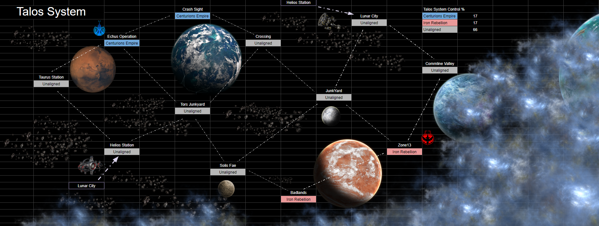
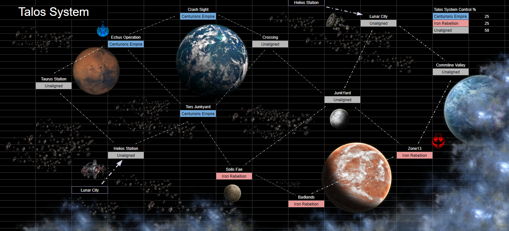
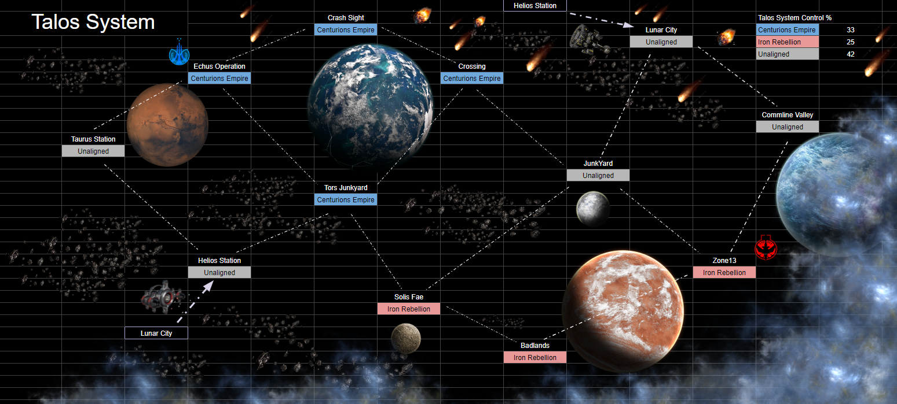
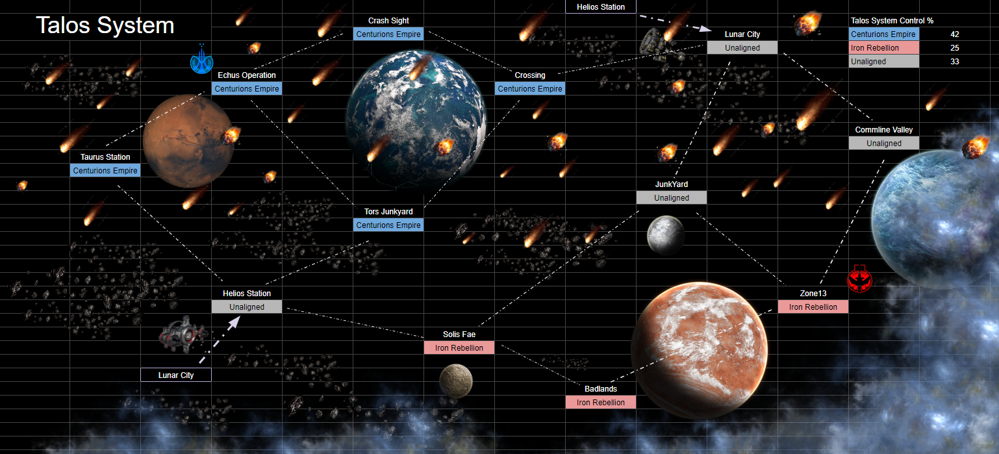
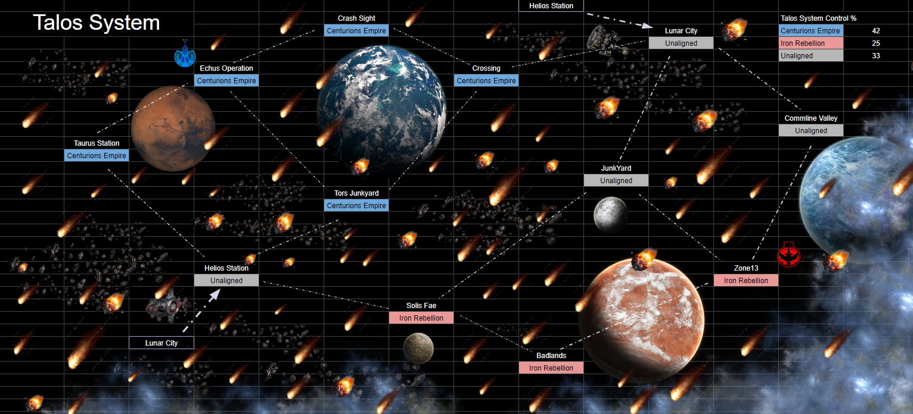
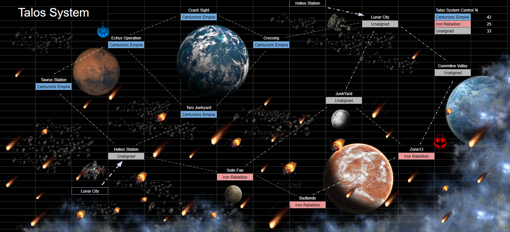
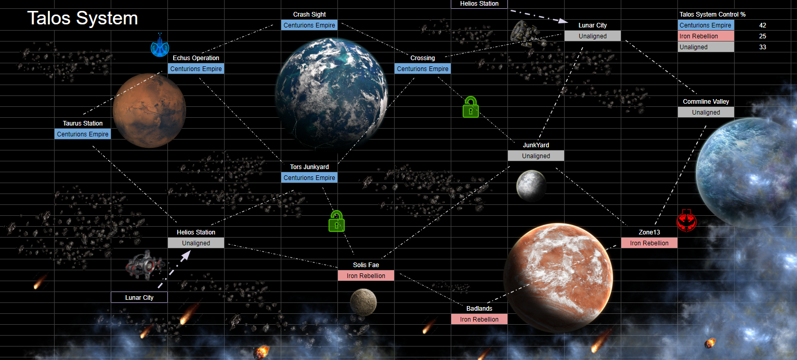

The terra cycle of 2091 saw the new rift sector reeling from the fallout of the First War. Though the Iron
Rebellion was victorious in pushing out the Centurion Empire, the Alpha Centauri VI conflict was only just the
beginning. Unknown to the resistance, the Empire had continued to build its forces in other systems within the
rift space, biding it's time. The next major surge of military activity surfaced on the edges of the Talos
system,
clawing its way into the new region.
The Echus Operation was the first to fall, unprepared for the invading armada. Next was the crash sight, taken
and
stripped of its resources to further fuel the imperial machine. In response, the Iron Rebellion once again took
up
arms, establishing operations within the mountains of Zone13. There they planned their counter offensive and
secured a parameter across the Badlands for the upcoming struggle. With war once again finding it's way into the
new age of the rift, the promise of peace and exploration sat threatened, hanging on the edge of a knife,
destined
to succeed or doomed to fail. The system could only hold it's breath as the emerging conflict began spreading
across the region, pulling all of Talos in with it.
Claim your allegiance: Centurions Empire or The Iron Rebellion
Empire
Rebels

The Siege of Tors JunkYard
Solar Event Epoch: 3821490216
From their launching platform of Echus Operation, the Empire took their first crusade into Talos, starting with
Tors
Junkyard. The Scrapper had been known to fight against outside interference of his operations, his distain for
authority fueling his drive to repel the invaders. This time however resistance would prove to be a pointless
endeavor. After their discovery of his illicit activities stripping down illegal vessels, it seems his presence
could no longer be tolerated. It was the excuse they needed to bring his operation under new management. In an
arrogant display of strength, the Empire brought its full might to bear, laying waste to the scrappers scouts
and
ending all known local resistance to their mission. With Tors JunkYard now under control of the Centurion Empire
and
the Scrapper in custody for interrogation, the royal Armada could launch deeper into the system, bringing Talos
one
step closer to imperial rule.
Empire
Rebels
The Cleansing of Solis Fae
Solar Event Epoch: 3824391586
With the cooperation of General Mealtris, the Rebels began their supply line expansion into Solis Fae. In order to
avoid drawing unwanted attention to the local residents, they were advised to post up in one of the longer
abandoned biodomes a safe distance from the civilian regions. Recently occupied by the local marauders and
raiders, it was never going to end peacefully, military force was going to be required to clear them out. Pushing
through the main barricade, several mechs were lost on the breach, caught by rigged explosives. From there however
the rebels were able to swiftly take control of the dome, clearing the stronghold of the many stolen war machines
that had been accrued over the cycles. This solar expansion put them on the edge of their core supply line
boundaries and within range of a direct conflict from the Empire, further raising tensions in the system and
drawing ever more attention from the Empire.
Empire
Rebels

Where the Union Met Lead
Solar Event Epoch: 3824367723
The workers of Crossing were discovered to be passing on equipment to the rebels under the Empires radar. Mechs,
weapons, intel, all of it flowed through the area like the polluted rivers pouring from the factories. As the
Empire caught wind of their activity they dispatched ground assault units to take full control of the area.
Risking rebel influence in such a key choke point in the system could only lead to more damage in the conflict.
During an interception of an experimental mech transfer, chaos devolved as the workers fought out of desperation,
trying to hold off the assault team until the rebels could arrive. Unknown to the empire however, the workers were
ready and able to use the war machine to it's full capacity, putting up a formidable resistance. The trained
imperial forces were too much for the workers however, their full armoury on display as they bombarded the area
with artillery strikes, ending the revolt. Imperial control of Crossing would prove useful to the Empires supply
lines moving forwards, both in equipment access and movement, bringing them one step closer to their goal.
Empire
Rebels
The Massacre of JunkYard
Solar Event Epoch: 3826495623
Few places in the system are considered more dangerous or chaotic than the two great Salvage Silos, run by the
Salvage Syndicates own Junker and Scrapper cousins. This was especially true for The JunkYard, feared system wide
for the rogue AIs who relentlessly hunt intruders across its corroded planes. So when a breakdown of negotiations
with The Junker himself lead to the rebels attempting to infiltrating the planets subsystems, what followed could
only be described as a horror scene. The massacre that ensued was absolute. Though the rebels were mostly
successful in infiltrating the Silos primary control sight, they were unfortunately unable to fool the Junkers own
personal escorts', sentient AIs loyal only to their master. JunkYard, it seemed, had no interest in entertaining
the war. Hoards of bloodthirsty machines swarmed the rebels on entry, tearing them apart down to the last soul,
leaving nothing but scorched ash and mangled steel remaining. Despite their attempts to blend in, once discovered,
the Iron Rebels were met with the oncoming rain of death they were so desperately trying to avoid. The Silo was
determined to remain as neutral as it was chaotic.
Empire
Rebels
The Junkers Message
Solar Event Epoch: 3828956437
The rebels massacre at The JunkYard was legendary, but paled in comparison to the Empires. On receiving intel of
the
rebels slaughter, the Imperial officers opted for bribery, offering imperial equipment in exchange for safe
passage
through the rusted fields. How arrogant. The Junker was well aware of their previous exploits at Tors JunkYard,
overthrowing his cousin from his domain. He spurned their offer, threatening violence upon their return.
Humiliated
and enraged, imperial black ops teams were swiftly dispatched to infiltrate the silos central control systems, and
attempt to shut down the death machines. The Junker, however, was waiting for them.
The Junker Mechs recognized the infiltrators on first sight, but allowed them to pass on their masters orders. On
the doorsteps of the control center, a shadow descended upon The JunkYard. The black ops teams were mercilessly
swept aside, missiles and lead pouring in from every conceivable direction. Where there was mangled steel left of
rebels previously, only molten pools and blood remained this time. Avenging the Scrapper, the death machines were
instructed to incinerate every pilot down to ash, stringing up any corpses that escaped the flames as a warning
for
future intruders.
The message was clear. The JunkYard was off limits and the war would not be entertained on the Junkers hollowed
grounds. Only death was offered here.
Empire
Rebels
First Contact
Solar Event Epoch: 3832296196
A direct conflict between the rebels and the empire was always inevitable. The spark that set off the powder keg
was the detention of the Scrapper, setting in motion a chain of events securing the longevity of the Talos
conflict. Despite the Empires best efforts to subdue their prisoner, the Scrapper was still able to secure
communications with the Rebels under their radar. Though, where he hid the communications device on his persons
still remains a mystery. Experiencing first hand the Empires "mission" for order, the Scrapper felt only more
distain for their presence, requesting assistance from the rebels. This transmissions were quickly intercepted,
both sides now aware of the other intentions. This time there were no tricks, no plans, no complex navigational
maneuvers, just a brute force confrontation. 2 rebel breacher units broke through the barriers to Tors JunkYard,
meeting the imperial defense units head on. While the rebels fought with passion, their breacher units were vastly
outgunned and outpaced by the imperial solders. Under the shadow of the scrappers corpse, both rebel lances were
eventually gunned down, a fruitless operation meeting a painful conclusion. Tors JunkYard, it would seem, would
remain under the Empires management, further fueling their war and securing their access points within the system.
Empire
Rebels

Asteroid Anomaly
Solar Event Epoch: 3834370466
This is a system wide emergency transmission. Our outer perimeter relays have detected an asteroid anomaly
entering our local space. Uploading the images below. Multiple cross system solar lanes have been declared
unusable at this time due to identified vulnerabilities. Lanes with low collision risks or installed Orbital
Deflection Arrays may remain open. In light of the emergency, we are transmitting coordinates for military
asteroid navigation routes connected to Lunar City and Helios Station. These are to facilitate authorized cross
system travel only when deemed absolutely necessary. All citizens are required to relocate to high collision
impact bunkers immediately until the anomaly has passed. Await the all clear system broadcast before exiting. End
transmission.
Ballistics in the Desert
Solar Event Epoch: 3837564448
As the firestorm began to ravage through the system, the most fragile solar lanes were restricted in an attempt to
reduce the loss of life. With the central access pathways cut off, the Empire moved to reinforce it's boarders,
taking the opportunity to break in new recruits. Off the parameter of their desert outposts, the empire launched
training assault operations across the sands. After months of enduring savage raids at their hands, the imperial
unit was more than keen to wipe the indigenous marauders off the map. Meeting them head on at their home territory
at Taurus Station, the new recruits poured into the chasm, eager for blood and glory. What they were met with
however was a cascade of heavy ballistics, ones they recognized as missing from the raids. As they scrambled to
gain composure in the chaos, they were guided by leadership to reform and recompose their units. The marauders
were relying on the ballistics as their rusted mechs were no match for the imperial garrison. Pushing out the last
of the Dune Raiders, the new recruits were met with glory and graduation, securing another boarder to Echus in the
unlikely event the rebel scum would ever breach this far into the outer system.
Empire
Rebels

Eye Rolling and Snipers
Solar Event Epoch: 3841659043
General Helix of the Talos military was assigned to protect Helios Station, safe guarding its access for
authorized use only. So when the Talos government broadcast the ACCs charted asteroid paths to the void harbors,
his eye rolls could be felt across the system. Could these idiots make his job any harder? On receiving the
broadcast, the rebellion immediately sought for his assistance in using the station, it's safe to say he was less
than enthusiastic about the idea. Spitting in the rebellions face, the general made his intentions clear, if they
ever landed on the station without authorization he'd personally step on them with his own mech. Politics was for
losers and General Helix had no interest in entertaining it, or the war. Desperate to expand into the empires
region, the Iron Rebellion had no choice but to punch through the military's ground defenses to access the harbor.
Treason charges could be dealt with later, lives were at stake. 2 rebel lances landed on the edges of the Void
Harbor, mounting a duel assault of the facility. The General, with his elite sniper unit and bruiser squad,
mounted a formidable defense of the station. While the first wave had some success pushing past some defenses, the
second were cut down by the snipers, who quickly repelled the remainder of the rebellion. It was a close, brutal
fight, but in the end Helios station was not ready to fall out of Talos control just yet, General Helix ensured of
that personally.
Empire
Rebels
The Defiance of Admiral Yen
Sola Event Epoch: 3843321959
Lunar city, under the command of Admiral Yen of the Talos Navy, was a formidable stronghold, The ground defenses
standing near impassible due to their towering barricades. To bypass this, the Empire was forced to engage orbital
drop teams to land right in the heart of the city, though it was impossible to predict their landing locations.
This was a fight for control. The imperial assault teams were partially successful in securing a number of control
zones across the city, but were eventually overwhelmed by Admiral Yen's hardened naval pilots. Trained in long
distance warfare, the scoped LHRs and howitzers were put to good use, shredding unprotected imperials down to
scrap. Stag troopers on the ground secured additional locations, catching additional imperials passing through the
militarized streets. The Admiral understood the damage that could be caused if the empire was allowed to get its
hands on nexus harbor. Though, they'd still need to get around Command Helix of Helios Station for it to be of any
use. With the empire pushed back to its space, options to cross into the rebel territory started becoming thin.
Hopefully the asteroid anomaly would soon pass. And the empire could resume its direct course to the rebel home
base.
Empire
Rebels

Hard Learned Lessons
Solar Event Epoch: 3846439170
The losses from both the empire and the rebels was eveidently not enough to deter the factions from further
attempts at securing The JunkYard. Their repeated efforts to sneak into the facility wore thin on the Junkers
patience however. This time there would be no room for sneaking, no elaborate tactics. Intruders would simply be
shot on sight, friend or foe. As the rebels made their second attempt to secure the control center, they were once
again met with extreme prejudice by the Junker Mechs. This time, however, the infiltrators barely crossed the
rusted gates before meeting heavy resistance. Every rebel was cut down on sight by the Junker mechs, burned down
to the last man. The shadow of the JunkYard was to remain unmoved and unaligned, continuing to bend all knees to
its presence.
Empire
Rebels

End of Asteroid Anomaly
Solar Event Epoch: 3848426370
This is a system wide announcement. Our parameter relays have indicated the asteroid anomaly has left the core
space of our system. All local authorities are authorized to evacuate all impact bunkers and relocate civilians
immediately. All solar lanes will be reopened alongside keeping the militarized lanes accessible to facilitate
emergency resource transportation. Resources are available through your local governments for damage assistance.
This has been a Talos system wide broadcast. End transmission.

The Fall of a King
Solar Event Epoch: 3853198693
The Empire had learned its lesson from their previous encounter with the Junker, nothing short of brute force
would be enough to dethrone the king. Following the rebels last attempt to take the area, the Empire took its
chance to storm the JunkYard while they were still recovering, launching a final invasion of the coveted waypoint.
Floods of the empires own recruits pushed into the courtyard, eager to prove themselves. Sacrificial buffers fresh
from Taurus Station, the new pilots fulfilled their duty with honor, grinding down the Junkers forces,
overpowering steel with flesh proving once again that humanity was still the superior race. With the Junker
finally contained, all that was left was to strike at the true prize of the system, decapitating the Iron
Rebellion and ending this sad resistance to true freedom once and for all.
Empire
Rebels
A Desperate Bid
Solar Event Epoch: 3855445093
In a final desperate bid to expand into the system, the Iron Rebellion once again found themselves pushing into
Tors JunkYard. The Empire had used its time well to reinforce the area, stripping down what resources it could
from the Scrappers own supply. With the main gates barricaded, they had ensured there was only one way in and one
way out, they had no interest in unwelcomed surprises. It was a feutile attempt from the rebels, their
reinforcements had been worn thin over time as the Empire had encroached on their supply lines. Tors JunkYard
would have placed them right within striking distance but it was a near impossible task at this point. The valiant
attempt was only met with another brutal failure, they couldn't endure another loss and maintain what control they
had left. At this point all they could do is prepare for what could be their final stand against the oncoming
Centurion armada approaching Zone13.
Empire
Rebels
For the Glory of the Empire!
Solar Event Epoch: 3859073893
Beaten and pushed to the edges of the system, the Iron Rebellion stood on the brink of its annihilation.
Centurions Armada had finally arrived at Zone13. The Empire was still desperate for retribution following the
first war, reeling from an open wound that it couldn't heal. Sanitizing the system of this arrogant scourge was
all that mattered now, Centurion would have his pound of flesh. With the first wave of landing mechs entering the
outskirts of the city, the rebels defenses were quickly overwhelmed as the imperial forces exploited existing
breaches in the walls. The rebel commanders had planned for months in case of an invasion, but their repeated
losses had drawn it's toll. Moving into the city, the local knowledge of the area gave the resistors only a brief
advantage as they again fell prey to the sheer numbers of war machines. With their final stand within the central
city the last of the rebels were gunned down and the flame extinguished. The lessons of the first war were painful
but instructive, there were no chances taken in this conflict. The Empire had won, Talos had been claimed and so
began an era of order and stability. Glory to the Empire!